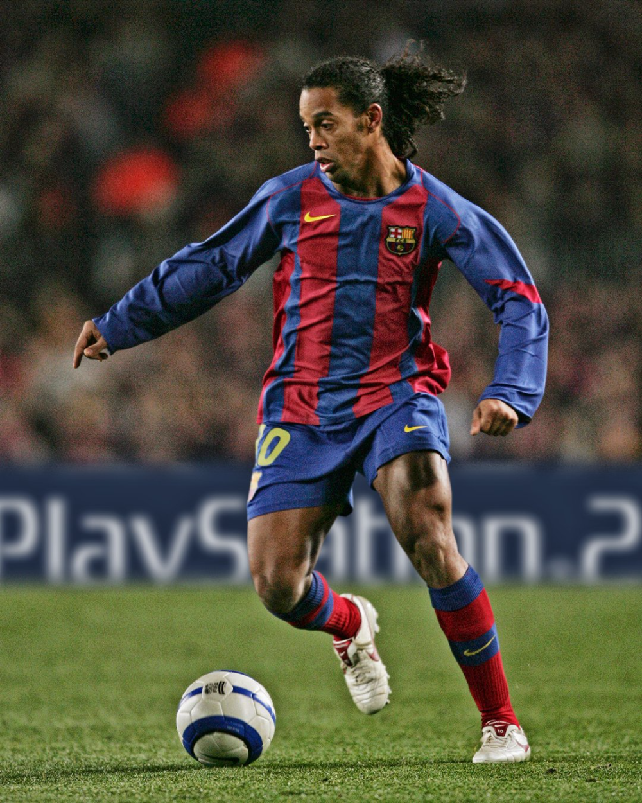

O desafio da JOVI
Muitos usuários têm smartphones com câmeras cheias de recursos, mas acabam usando quase sempre o modo automático por dificuldade em entender modos, configurações e contextos de uso.
ZERYON
Perfis fotográficos personalizados para transformar a câmera em uma experiência mais simples e alinhada ao que você gosta de fotografar.
Muitos usuários têm smartphones com câmeras cheias de recursos, mas acabam usando quase sempre o modo automático por dificuldade em entender modos, configurações e contextos de uso.
A Zeryon - Photo Profile organiza a experiência da câmera por meio de perfis fotográficos criados a partir dos interesses, preferências e situações mais comuns para cada usuário.
O usuário responde perguntas sobre o que gosta de fotografar, quais cores prefere e em quais contextos costuma usar a câmera.
As respostas ajudam a formar perfis fotográficos personalizados, pensados para representar diferentes interesses e momentos.
Na experiência da câmera, o usuário escolhe o perfil mais adequado para a situação, como retrato, paisagem, animais ou esporte.
A interface passa a representar a experiência daquele perfil, reduzindo a necessidade de procurar manualmente cada configuração.
Perfis alinhados ao jeito como cada pessoa fotografa.
Menos barreiras para quem não domina termos técnicos.
Experiências organizadas por situação e interesse.
A câmera acompanha estudos, vida social e criação visual.
A Zeryon foi pensada principalmente para estudantes full-time, jovens da Geração Z e pessoas que usam o smartphone todos os dias para estudar, registrar momentos, produzir conteúdo, socializar e se expressar visualmente.
Esse público gosta de fotografar, mas nem sempre tem conhecimento técnico para ajustar a câmera com facilidade. Os perfis fotográficos reduzem essa barreira ao organizar a experiência de acordo com preferências e contextos reais de uso.
Registro de conteúdos, materiais, rotina acadêmica e momentos do dia a dia.
Amigos, eventos, encontros e situações cotidianas registradas com mais praticidade.
Retratos, paisagens, animais, esportes e produção de conteúdo com identidade visual.
Apoio para quem costuma depender do modo automático por não conhecer configurações avançadas.

Perfil para registrar cenários, viagens, céu, natureza e ambientes abertos.

Perfil voltado para fotos de pessoas, expressões, estilo pessoal e redes sociais.

Perfil para registrar pets, animais em movimento e momentos espontâneos.

Perfil pensado para jogos, treinos e situações com mais ação.
Concepção e desenvolvimento colaborativo da solução Zeryon.
RM572486
Concepção e desenvolvimento colaborativo da solução Zeryon.
RM568739
Concepção e desenvolvimento colaborativo da solução Zeryon.
RM573719
Concepção e desenvolvimento colaborativo da solução Zeryon.
RM572208
Concepção e desenvolvimento colaborativo da solução Zeryon.
RM570932
Concepção e desenvolvimento colaborativo da solução Zeryon.
Interface demonstrativa para contato com o projeto. Como esta landing page não possui backend, o formulário representa apenas a estrutura visual e semântica da interação.